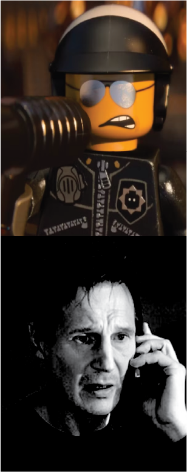

Chris Pratt, Elizabeth Banks, Will Arnett, Tiffany Haddish,
Stephanie Beatriz, Alison Brie, Nick Offerman, Charlie Day,
Maya Rudolph, Will Ferrell, Jadon Sand, Brooklynn Prince,
Channing Tatum, Jonah Hill, Richard Ayoade, Ben Schwartz,
Noel Fielding, Jason Momoa

CLIPS
SCRIPT
THE LEGO MOVIE 2: THE SECOND PART
complete transcript
[PREVIOUSLY ON THE LEGO MOVIE]THE MAN UPSTAIRS: Now that I'm letting you come down here and play, guess who else gets to come down here and play?FINN: Who?THE MAN UPSTAIRS: Your sister. (echoing)FINN: What? [cut to the Lego world, we see aliens beam down from overhead. We see just like what happened after the events of the first movie.] EMMET: Well, things sure have a way of working out smoothly. Am I right, guys? (in slow motion) What? DUPLO ALIEN: We are from the planet Duplo, and we are here to destroy you. (zoom in on the Lego characters) EMMET: Oh, man.LUCY: You're going to have to get past us!BATMAN: Specially ME!UNIKITTY: Oh, it's on! (Metal Beard knocks Vitruvius aside) EMMET: Wait, guys! That's no need to fight anymore. I got this.LUCY: Yeah, I don't think that is a good idea.EMMET: (sigh) Here we go. Hello, visitors from another planet! You, are just the special... as we are. (starts building a heart) See? Friends.DUPLO ALIEN: Ooh.EMMET: Yes.BATMAN: Why are you know? It work.UNIKITTY: Even though we're different, I guest if we open our heart, anything can be -- [The alien swallows the heart.] DUPLO ALIEN: More!.More!. More. More more more more more more more more!!!!!!!EMMET: Oh, no.LUCY: Attack! (she builds a hammer and strikes the alien)DUPLO ALIEN: aaaaaaaaaaaaaaaaaaahhhhhhhhhhhhhhhh!!!!!!!!! (breaking Restaurants and Homes and Buliding's Glasses) LUCY: Run!!DUPLO ALIEN: (dulpo Attacking) Unikitty- I want to play with you kittys!!!!!DUPLO ALIEN: Everything is awesome!METAL BEARD: Fire the Laser cannon!DUPLO ALIEN: (British accent) I eat lasers!METAL BEARD: That's IMPOSSIBLEDUPLO ALIEN: Missed me!BATMAN: No I DID Not!LUCY: They're so adorably destructive!PRESIDENT BUSINESS: Hey, guys. Listen up. Everyone, get along! Done! Fixed it! I'm going golfing.EMMET: President Business, you have to stay and help us!PRESIDENT BUSINESS: I'm sure you guys can sort it out amongst yourselves. You're great at that stuff. Bye. Gotta go. [He drives off.] EMMET: Don't worry, Lucy, everything can still be awesome? [THE LEGO MOVIE 2 - 5 YEARS LATER] LUCY:(V.O.) It wasn't awesome. We fought them off, but they kept returning. Flashback: [Duplo] Let's dance! LUCY:(V.O.) Every time we rebuilt, they kept coming after whatever bright and shiny thing caught their eye, and always accompanied by catchy pop music. We see Superman, Green Lantern, Aquaman, Wonder Woman and others attempting to pursue the aliens A league of brave heroes volunteered to chase them to wherever they came from. AQUAMAN: My man! [whoops]SUPERMAN: Where's Batman?WONDER WOMAN: He's off having a separate standalone adventure.GREEN LANTERN: You almost forgot me, guys.AQUAMAN: Oh, did we?GREEN LANTERN: I'm literally a lantern. How did you miss me? That's my whoops. Fear not, citizens, I shall shed... Guys, can you just reopen the... Guys, just reopen the...- [engine powering up]You're not gonna?I don't care, it's just feelings. Stuff 'em down. LUCY:(V.O.) We may never know if they even made it to the aliens or were lost in the dreaded Stairgate. A lifetime has passed since then. We grew up. Abandoned anything cute, shiny, poppy, or young. And from the wreckage, we built a grittier, cooler, more mature society. We call it Apocalypseburg. And it is a heckish place to live. LARRY: We don't serve decaf! LUCY:(V.O.) Show weakness and you'll be eaten alive. This new life has toughened and hardened us all. [Emmet is buying coffee like he did in the past.] EMMET: Two coffees, please! One black, one with just a touch of cream and 25 sugars.- [Larry grunts]LUCY:(V.O.) Well, toughened most of us. EMMET: Good morning, Apocalypseburg! Oh! Almost ran me over. [chuckling] Classic!- [music playing]Good morning! Hello, cyborgs.MAN 1: I say Sean Connery!MAN 2: Daniel Craig!MAN 3: I say Roger Moore!MAN 2: You're crazy!MAN 4: Pierce Brosnan!MAN 5: George Lazenby.MAN 2: Who?MAN 1: Daniel Craig for life! EMMET: Hey! Surfer Dave!CHAINSAW DAVE: It's Chainsaw Dave now!EMMET: Morning, Scribble Cop! Morning, Sewer Babies! This song never gets old.- [screams] Me organs!EMMET: Oh, sorry!Oh, good morning, Sherry.Scarfield. Deathface, MetalScratch. Razor, Laserbeam, Fingernail, ToxinToes... Jeff. Hey, Batman! How was your last adventure? BATMAN: Good, really good. Saved the world. Again. Learned the value of friendship. I loved. I lost, and I'm good with it... And it's totally on brand for me to be a loner with a broken heart. It's what the fans want. So, yeah, no, I'm good with it. Just me and Alfred. [laughs]- [stifled laugh]Not a terse laugh. And, um, what about you? SONG: [chuckles] Awesome! Everything is awesome WYLDSYTLE:(singing) Once I was a rebel, fighting for a righteous cause. Now, I only fight to survive. Everything was awesome. Now everything is bleak. EMMET: Hey, Lucy!LUCY: Oh! Hi.EMMET: I brought you coffee! Extreme close up on Lucy's face, as the skies darken. LUCY: Coffee! The bitter liquid that provides the only semblance of pleasure left in these dark times. [Pull out to show Emmet.] EMMET: Oh, my goshness! Did I interrupt you brooding just now? Ah, this brooding sesh is not really going anywhere. Man, I wish I could brood like you. LUCY: Look, all you gotta do is just stare off into the distance and then narrate whatever grim thoughts come into your mind. What if one day there was no coffee? More like, "War hardens the heart." "War hardens our hearts..." Okay, I'm thinking, it's more like, "War..."EMMET: - "War!"LUCY: - Hang on.EMMET: - "War."LUCY: No.EMMET: "War."LUCY: - "War!"EMMET: - "War!"LUCY: - "War."EMMET: "War." EMMET: I can't do this! I'm too happy to see you. LUCY: What's the scariest thing you can think of? EMMET: Oh, come to think of it, I actually had a nightmare last night.LUCY: Nightmares are super broody. What was it about?EMMET: All right, um, so it started with this dolphin in a top hat.LUCY: Uh-huh.EMMET: And the dolphin says in a weird voice...- [dolphins clicking]DOLPHIN: - It's 5:15 p.m. EMMET: Oh, I forgot to mention his chest was a clock.LUCY: Okay, I'm thinkin' darker, broodier, less fish.EMMET: Oh, and Batman was there, and he was covered in glitter. There was a talking ice cream cone.LUCY: This isn't really the broodiest.EMMET: And then, these scary black holes open up in the ground. They started to suck everybody I've ever cared about out of my life! And Gandalf was there. And he shouted...GANDALF: It's Armamageddon!LUCY: Emmet! No!EMMET: And you disappeared into the void, never to be seen again. LUCY: Not bad brooding!EMMET: [chuckles] Oh! Thanks!LUCY: That was definitely just a dream, right? Not some vision of the future?EMMET: No, no, no. THIS is my vision of the future. A little lower, to the left. Ta-da! LUCY: A house? EMMET: Come on, let me give you the tour! Very first one on the cul-de-sac. This is the living room, where you can live it up. TV room, dining room, Planty's room, [whispers] kitty cat room... Of course, the kitchen, complete with breakfast nook, lunchtime nook, and fireman pole. Which leads to water slide... Trampoline room... Monkey-barring all the way up to... Toaster room! So you can have toast or waffles at any time! LUCY: [sighs] Oh! EMMET: And out back, a double-decker porch swing, so we can always hang together! What do you think? LUCY: Uh... Wow. Um... It's sweet.EMMET: It is.LUCY: It's just, uh... It's going to attract aliens and get destroyed.EMMET: But maybe it won't. I just thought we could rebuild the future. Make everything awesome again. LUCY: [sighs] Emmet... You gotta stop pretending everything is awesome. It isn't. Every morning, you walk through town, singing that terrible, ANNOYING, manufactured pop song! EMMET: [chuckles] That song really seems to upset you.LUCY: - No, it doesn't.EMMET: - Oh, my mistake.LUCY: That song was fine when we were younger, but we also have to grow up sometime. Can you do that for me? EMMET: Well, yeah. I can try. But it's easy for YOU. You were always a dark, goth rebel. LUCY: [scoffs] Yes, of course I was.EMMET: - Let's change the subject.LUCY: - Okay.LUCY: We have to be hardened and battle-ready. BOTH of us.EMMET: Yeah. No, I get it. And that's why I've cultivated a totally hard-edged side that's super tough and... Look, look! A shooting star. Make a wish! [gasps] LUCY: Oh, no! (she takes out binoculars)EMMET: What? Can't think of anything to wish for? I always just wish for more wishes, 'cause you can never have enough.LUCY: - Emmet.EMMET: - What is it?- [whirring] Binoculars turns into a larger bino- [Emmet grunts] Oh.[laughs] LUCY: Something new.UNIKITTY: - [yowls]LUCY: Recon mission.UNIKITTY: Accessing inner rage! (She turns into a large angry cat)LUCY: Let's move out! [roars] EMMET: Hey! (he appears beside them) [automated voice] Scan. Scan.- [upbeat music playing]Beep, bop, boop. Scan. Scan. Sneak, sneak, sneak. [upbeat music continues] WYLDSYTLE: We've never seen anything like this. They're evolving. WYLDSYTLE: What is it up to?EMMET: I don't know, but that beat is pretty fresh. Uh-oh.- [grunts] Take it down!- [inhales sharply] [all gasp]- [Lucy] Oh!- Huh? [the ship fires a heart that sticks into the wall.] DUPLO HEART: Hello! [ringing] LUCY: Run! [Heart explodes.] Super-aggro turbo engines! Super-safe tail light and blinker.- Heat-seeking missiles!- Windshield wipers!Spiky blaster cannon! Snazzy racing stripes.- Let's go!- [tires screeching][grunts] LUCY: I TOLD you that house would attract aliens!EMMET: I can fix it. I'll get us out of here. [engine revving] Look out! [screaming] EMMET: Hey! I think my dentist used to work in this office.LUCY: - Focus!- [both scream] EMMET: It's like it knows our every move!LUCY: - Emmet!EMMET: - What?LUCY: - Look out!EMMET: - No, no, no! [screams] [Emmet sighs] LUCY: - Ultrakitty, flare!- [growls] [HAPPY NEW YEAR flares are released. Pull back to show Batman and Alfred watching the skies.] ALFRED: I can't believe another year has passed. LUCY: Wrong flare! ALFRED, BATMAN: [both singing] Should old acquaintance... [Unikitty fires a HELP! flare.] BATMAN: Alfred, battle cars. [Send out the battle cars.] [grunts] Look on our custom vehicles and despair! WARRIORS: [chanting] Custom vehicles! Custom vehicles! Custom vehicles! [both exclaiming] PANDA MAN, MERMAID LADY: - We're alive!PANDA MAN, MERMAID LADY: - We're alive![both screaming]You don't have to keep whipping me, Deborah. METAL BEARD: Welcome to Shark Week! [fires a shark at the ship, suddenly the ship turns the shark into a dolphin] [dolphin clicking][screaming]- Gotcha!- Okay, time to panic. WARRIORS: Time to panic! Time to panic!- [whimpering]Time to panic!- [man] Open the door!- [woman] Let us in! ALFRED: Coming. Coming. Shoes off, please. I said, shoes off! LUCY: Get us home as fast as you can! Go! Go! I need angry thoughts, angry thoughts!LUCY: Uh, pollution, poverty, people who put raisins in stuff.UNIKITTY: It was perfectly fine without raisins! DUPLO HEART: Love you!DUPLO HEART 2: I love you more! EMMET: - Okay, that's adorable. Hurry! The door is slowly closing. Good thing the door is closing so slowly and dramatically. [The ship fires stars at them.] STAR: - Whoa.STAR 2: - Whee!STAR 3: - Hello!STAR 4: - Hooray!STAR 5: - [exclaims] BATMAN: Eat it and weep. [fires a projectile at the ship, which bounces off its shields] BATMAN: Eat more and weep more! [fires more projectiles, nothing happens] Keep eating and weeping. Weep, eat, weep, weep, eat, eat, weep, weep! [grunts] Eat freedom! [fires at something above, which falls and strikes the ship pinning it to the ground. The ship explodes] BATMAN: You're welcome. [all cheering] BATMAN: What in the heck? [A star is stuck in the closing doors.] STAR: Oh, the pain! (Star Duplo whimpers)STAR: It's getting so cold. Help me. GEN. MAYHEM: I'm General Mayhem. Intergalactic Naval Commander of the Systar System. Open the gate. LUCY: No way! That gate is never, ever, ever, ever... Emmet, what're you doing? STAR: Hooray! [The star flies off.] EMMET: See? That wasn't so bad. Nothing got in. [pull back to show Mayhem standing with Emmet] EMMET: [screams] Something got in. GENERAL MAYHEM: Bring me your fiercest leader! BATMAN: Yeah, that's me. This guy. Coming through. I'm the leader, obvs.LUCY: You? I don't think so.BATMAN: How many movies have they made about you? Because there are nine about me, and like three others in various stages of development.METAL BEARD: [grunts] If ye be considered a leader then why aren't we?UNIKITTY: - Yeah. I'm a princess.BENNY: - What about me? I'm a space commander.METALBEARD: I'm literally the captain of a pirate ship! [Mayhem presses something on her wrist. Outside the camp, her ship starts re-assembling.] [engine powering up]- [Benny] My helmet is very blue!- [Emmet] Wait a minute. When everyone became the Special, didn't we all become leaders? MAYHEM: No offense, I sense no leadership qualities from you. [We see her helmet scanning Emmet and developing a personality profile about him.] MAYHEM: My readout confirms you to be soft, fragile, and a less than worthy opponent. LUCY: Hey! You watch what you say about Emmet. He saved the universe a few years back. MAYHEM: This guy was a fierce warrior? LUCY: Okay, well, technically I did the warrior stuff, but... MAYHEM: So, you fought and masterbuilt, and kicked butt, and then the hapless male was the LEADER? LUCY: Um, well, you know, he was a symbol for... That we all have ideas and... MAYHEM: - But YOU did all the work.LUCY: - Whoa... Hey! Emmet is the sweetest, most optimistic guy you could ever meet. And I know those qualities are not useful anymore, and that Emmet isn't changing with the times, and lacks a killer instinct, and in general, just isn't tough enough. MAYHEM: Not tough enough? LUCY: Yeah. (she grabs Emmet with her arm) LUCY: But this guy is the Special. Well, at least he WAS. MAYHEM: Silence. I don't have room in my ship to take everyone. I can fit maybe five. LUCY: - Take?MAYHEM: - I'll explain with a memorable jingle. [upbeat music playing] VOICEOVER: Your greatest leaders Are cordially invited To a matrimonial ceremony Tonight at 5:15 EMMET: 5:15? MAYHEM: Well, if you say 5:00, people show up at 5:15 anyway. And if you say 6:00, people start expecting dinner, it's a whole thing. EMMET: - [gasps] [Smash cut to show his nightmare. The toy dolphin announces...] DOLPHIN: - It's 5:15 p.m. It's Armamageddon! LUCY: Emmet! No! EMMET: Armamageddon is real. BATMAN: I got this. [He throws a Batarang at Mayhem, but misses. She throws a Duplo heart at him.] HEART: You are so handsome. BATMAN: - And you are very... perceptive. [grunts] By Jove! EMMET: Lucy! LUCY: [Wyldstyle grunting] I RSVP "no"!- [General Mayhem] You must RSVP "yes"!- [exclaims] EMMET: I'll save you with my triple-decker couch! [man coughs]You know, maybe let us handle it. Whoa! METALBEARD: You biscuit-eatin' space lubber! [groans] Don't need a body. I'll fight you with me bare... Uh-oh. BENNY: Spaceship! Oh, yeah? EMMET: This couch is a convertible. ALL: Oh, Emmet! You're couchin' for an ouchin'. [grunts]- [groans]- [all] Oh, Emmet! MAYHEM: Thanks for playing. Oh, no. No, no, no! No, no, no! EMMET: Lucy!LUCY: Emmet!EMMET: No! GENERAL MAYHEM: So long, Jerksburgers. [IN THE REAL WORLD] BIANCA: He's gonna come upstairs. FINN: No! I'm not gonna come to your dance party right now. I'm in the middle of a storyline- with time travel... BIANCA: Please? FINN: ...and mind-blowing plot twists. Stuff you wouldn't understand. BIANCA: These guys are coming with me. FINN: No, no, wait. No, no, no. Stop! [BACK TO THE LEGO WORLD] EMMET: Uh, Lucy? What? Emmet, what have you done? EMMET: Wait. You guys don't think this is all my fault? UNKNOWN: - Maybe not entirely your fault.- [cats meowing] SHERYL SWOOPES: It's totally your fault. You got that right, WNBA legend Sheryl Swoopes. EMMET: Listen, everyone, Lucy and the others were kidnapped in some sort of plan to start Armamageddon. UNKNOWN: Armamageddon? Where we're banished for an eternity into the Bin of Storajj? UNKNOWN 2: That's just a legend. EMMET: - No, it's real! And it's gonna happen to all of us unless we rescue them. VELMA: Jinkies! Who's gonna lead the mission? You wouldn't even make it past the Stairgate, let alone survive the Systar System. That's a suicide mission! ABRAHAM LINCOLN: Wyldstyle said you're not tough enough to do this, You haven't changed with the times. You're stuck in the past a quarter score ago. LEGO PERSON: We've all grown up except for you. CHAINSAW DAVE: Yeah, dude, you're a total Hufflepuff.- [woman] That's right, he is!EMMET: - But I'm not... GANDALF: You remember what happened with the Justice League. Now with Batman gone and Marvel not returning our calls, there are no real heroes left. Only original Aquaman and unlicensed knock-off, Larry Poppins. LARRY POPPINS: Well, I say a spoonful of salt helps the medicine go down.- Anyone? No?- [all exclaiming]- [Gandalf] Oh, Larry!- [all booing] MAN: Yeah, what he said is right! EMMET: Oh, come on, everyone! We've done this before. We all took on Lord Business, and we changed the world. We are all special now. There's nothing we can't do! We need to go up to that alien planet, and show those aliens what we're made of. Who's coming with me? [sighs] EMMET: I'll show them all how tough I am. [grunting] [engine powering up] Hang on to your fronds, Planty. We're going to save Lucy... And all of the other people who were captured. [MAYHEM'S SHIP] [cut to show Mayhem flying in her ship.] BENNY: Spaceship. Spaceship. Spaceship. Spaceship. Spaceship. Spaceship. [grunts] So, this fits five, you say? Oh, look at all these spaceship buttons. What does this one do? Oh, what does this one? What about this one? ECU to show him press the button. Smash cut to show the spaceship dropping. - [engine powers down]- [all screaming] MAYHEM: That would be the power switch. UNIKITTY: Ooh, what is that? GENERAL MAYHEM: BEHOLD, THE SYSTAR SYSTEM! LUCY: No "whoas!" Do not give her the satisfaction of whoa-ing this! That's even worse! Stop it! [ethereal music playing] LUCY: Wait, that's Batman's job! METALBEARD: Your feet be in me face!- [all arguing]MAYHEM: - Please be quiet. I'm trying to make a majestic landing. STAR DUPLOS: Welcome to the Systar System- [General Mayhem] Nailed it.- [lock chirps] The queen awaits. STAR DUPLOS: To the Systar System UNKNOWN: Uh, am I the only one creeped out by this?UNKNOWN 2: Uh... No. [all grunt]What? [gasps] Ice cream cone! ICE CREAM CONE: Presenting Her Majesty Queen Watevra Wa'Nabi, Empress of the Systar System. [triumphant music playing] QUEEN WATEVRA WA'NABI: Susan, would you get our guests something refreshing to drink?SUSAN: Yes, Your Majesty.QUEEN WATEVRA WA'NABI: Thank you, Susan. Welcome, guests, to the Systar System. UNKNOWN: Uh, help me out, guys. What is this? A talking horse? QUEEN WATEVRA WA'NABI: Sorry about my appearance. I was in a meeting with the animal planet of Anthropomorphia, so I look like a horse. Thank you. [laughs] I'm Queen Watevra Wa'Nabi. I can change my form to something else, if this makes you uncomfortable. (she turns into an octopus) [in distorted voice] Hey, guys. BATMAN: No, go back. The horse was much more palatable. LUCY: Whoever you are, let us go and stop attacking us! QUEEN WATEVRA WA'NABI: You started it. LUCY: You started it! What do you want with us? QUEEN WATEVRA WA'NABI: [normal voice] Trust me, my plans are totally sinister. An attendant whispers something into her ear [whispers indistinctly] QUEEN WATEVRA WA'NABI: - Sincere. Sincere. I just wanna help you guys. All I need is your participation in a matrimonial ceremony. LUCY: No way. QUEEN WATEVRA WA'NABI: Trust me, it'll be totally terrifying. Attendant again whispers something to her. [whispers indistinctly] QUEEN WATEVRA WA'NABI: Terrific. That's what I meant. LUCY: Why are we supposed to trust you? QUEEN WATEVRA WA'NABI: I'll tell you using a universal language. UNIKITTY: Is it math? QUEEN WATEVRA WA'NABI: The language that unites all the planets in our system. [SONG 1: "NOT EVIL"] - [music playing] LUCY: - Oh, no. Are we in a musical?BATMAN: Yep, get ready. QUEEN WATEVRA WA'NABI:(singing) Hello, friends My name is Queen Watevra Wa'NabiDon't worry I'm totally not One of those evil queens You've read about In fairy tales Or seen in the moviesAnd there's no reason at all To be suspicious of me ROBOTS:(singing) Not evil, not evil, no I'm the least evil person I know LUCY: I won't lie, it's actually very suspicious that you're leading with this. QUEEN WATEVRA WA'NABI:(singing) I'm so not a villain I have zero evil plans No ulterior motives Just wanna help where I can I wanna shower you with gifts 'Cause I'm selfless and sweet So, there's no reason at all To be suspicious of Queen Watevra Wa'Nabi The least evil queen In history And if you do not Believe me I totally won't Imprison your family 'Cause that'd be evil And that's so not me ROBOTS:(singing) I'm not evil, not evil, no I'm the least evil person I know LUCY: Really? Because I'm getting super-evil vibes here. QUEEN WATEVRA WA'NABI:(singing) Benny, do you like spaceships? 'Cause I think they are great BENNY: How'd you know that? Loving spaceships Is my one defining trait QUEEN WATEVRA WA'NABI:(singing) Well, now, my good friend You can build The spaceship Of your dreams On your very own planet With your own Spaceship-building team BENNY: - [gasps]LUCY: - Come on, do not fall for this. BENNY: Wyldstyle, haven't you heard? There's no reason at all To be suspicious of her LUCY: Yeah, I know she keeps saying that, but she's clearly an evil queen. METAL BEARD: Yar, well, I'm not buying it. QUEEN WATEVRA WA'NABI:(singing) MetalBeard, a pirate Without a ship That's so cruel It's like a spider Without a web Or a queen without a fool LUCY: Hey! Even her metaphors are suspicious. QUEEN WATEVRA WA'NABI:(singing) I've got a surprise For you A planet That's really a pirate ship And the population, your crew METAL BEARD: Her story checks out. She's cool. Not evil. UNIKITTY: - What about me? QUEEN WATEVRA WA'NABI:(singing) - Unikitty, what's the most glitter you can imagine? UNIKITTY: A lot! QUEEN WATEVRA WA'NABI:(singing) - Times that by infinity UNIKITTY: - Whoo-hoo! QUEEN WATEVRA WA'NABI:(singing) And, Batman BATMAN: Don't even try it, lady. I don't need anything. QUEEN WATEVRA WA'NABI:(singing) Oh, I know, That's why I'm going to give you Half of everything BATMAN: Uh, like "everything" everything? QUEEN WATEVRA WA'NABI:(singing) "Everything" everything BATMAN: She's rad. This chick gets me. QUEEN WATEVRA WA'NABI:(singing) Here are some Other adjectives People use to describe me Un-duplicitous, un-malicious Un-conniving, un-nasty LUCY: You're clearly just adding "un" to words that describe you. QUEEN WATEVRA WA'NABI:(singing) Who, me? I'm Queen Watevra Wa'Nabi The most least evil person You'll ever meet And if you make eye contact With me I totally won't have you Executed immediately 'Cause that'd be evil CHORUS:(singing) - Evil - Evil - Evil - Evil QUEEN WATEVRA WA'NABI:(singing) And that's so not me [applause] LUCY: Sorry, we're not swayed by a little song-and-dance number. BENNY: Oh, I liked the tune. Especially the spaceship part. And also, no other parts, just the spaceship part. BATMAN: Artist to artist, I could tell it was from the heart. I knew I would like you. QUEEN WATEVRA WA'NABI: Game recognize game. He'll do perfectly for the ceremony. BATMAN: I am perfect. What is this matrimonial ceremony, buster? QUEEN WATEVRA WA'NABI: Oh, it's gonna be fun. I built a Space Temple right in the center of our universe. And at 5:15, all the stars will align, and we'll hold a wedding between me and the Man of Bats. - [all exclaim] QUEEN WATEVRA WA'NABI: - The rest of y'all are gonna be in the wedding party. And once we say, "I do"...[laughs wickedly] Then you'll get all those gifts I promised y'all. LUCY: You're lying. It's gonna summon Armamageddon, and we're gonna get tossed into the Bin of Storajj forever. QUEEN WATEVRA WA'NABI: Whoa. No, no, no. No, no, no. Back up a quick sec. BATMAN: Did you say "wedding"? QUEEN WATEVRA WA'NABI: Man, you agreed to half of everything. BATMAN: No, no, no. No to the no. QUEEN WATEVRA WA'NABI: But I thought you were the leader! BATMAN: Uh, yeah, I mean, I am obviously leader guy. But I'm not...(stutters) Doesn't mean that I'm ready to settle... I'm not gonna be the guy who's gonna make that kind of a leap... LUCY: [tutting] NONE of us will be part of your wedding ceremony, EVER. QUEEN WATEVRA WA'NABI: Y'all are so dusty, tough, and grouchy. Take them to get changed for the ceremony. (points to Wyldstyle) And THIS one needs to get changed most of all. [Angle on Lucy. Cut back to Emmet.] [EMMET'S JOURNEY] EMMET: Whoa! It's the portal to dimensions unknown. The Stairgate. [door creaking] I'll just push through the Stairgate. Seems simple enough. [screaming] EMMET: Glassteroids! I can do this. Torpedoes deploy! [Fires torpedoes, which hit the "glassteroid" and ricochet off.] EMMET: Huh. I can do... [groans] I can't do this. This is the end! [His ship keeps hitting asteroids, until a particularly large rock looms ahead. At the last second somebody smashes the asteroid in front of Emmet] EMMET: Who was that? Where did he go? [Pull back to show a man standing next to Emmet.] REX DANGERVEST: - Hey! You mind if I save your life?EMMET: - Not at all. [chuckles] Rad. [The man hijacks Emmet's craft and pilots it like a professional bypassing the asteroid field We pull back to show Emmet's house is on the end of a string being moved past the Stairgate.] [BACK TO LEGO] REX DANGERVEST: And THAT's how you break on through to the other side...of the Stairgate. EMMET: Who are you? REX DANGERVEST: [chuckles] The name's Rex, Rex Dangervest. ANNOUNCER: Galaxy-defending archaeologist, cowboy, raptor trainer, who likes building furniture, busting heads, and having chiseled features, previously hidden under baby fat. EMMET: Whoa! [screams] Enemy ship! REX: That's a negative. That bad boy is MY ship. Built her myself out of spare pieces. [Emmet's house is pulled into Rex's ship.] REX DANGERVEST: Let me show ya around. Rex knocks on Emmet's house and it crumbles EMMET: Hey, you broke my ship! REX DANGERVEST: Listen, kid, you can build anything, but there ain't nothing you can't break. [both laughing] EMMET: I don't get it. REX DANGERVEST: How about a tour? Behold, the Rexcelsior. EMMET: Whoa-ho-ho! Are those dinosaurs? [laughs] Whoa! REX: Tell me, what's a scrapabout like you doing trying to go through the Stairgate? EMMET: Aliens from the Systar System kidnapped my friends. I'm going to get them back. REX DANGERVEST: You don't wanna go anywhere near the Systar System, trust me. It's ruled by an alien queen, and she'll try to brainwash your friends, so she can use 'em in a matrimonial ceremony to bring forth... EMMET: - Armamageddon?REX DANGERVEST: - Bingo. EMMET: You've been to the Systar System? You can help me. REX DANGERVEST: Forget it, kid. That place is too terrible. But I don't like to talk about my backstory, so don't even ask. EMMET: - Oh. Okay. [Flashback to show Rex's history] REX DANGERVEST: - There I was, on a galactic mission. Ended up being MORE than I'd bargained for. I landed in the desolate plains of the dust planet Undar of the Dryar System. - The winds were ferocious. The isolation, intense. I waited for my friends. Seemed to last forever. That's when I learned... There was no one I could trust but me. EMMET: I'm so sorry, Rex. REX DANGERVEST: Don't be. My time alone was an awakening. I learned how the universe really works. EMMET: Yeah, I know how you feel. REX DANGERVEST: Ha! You couldn't possibly know how it feels. EMMET: Yeah, I do. Like you can't ever go back to the person you used to be. Even though it was so much simpler. - You have to find your own way. - [raptor chirps] But you just don't know how. REX DANGERVEST: Hold up a second. - You have been there. - Yeah. REX DANGERVEST: What's your last name, Emmet? EMMET: Brickowski. REX DANGERVEST: No way. The visionary double-decker-couch-building hero who took it to Lord Business and had the guts to face The Man Upstairs? THAT Emmet Brickowski? EMMET: Yeah. REX DANGERVEST: Dude! Big fan! EMMET: Wait, you are a FAN of me? REX DANGERVEST: Heck yeah. You're the reason I started wearing vests. EMMET: - Do you like mine?REX DANGERVEST: - Yes, I do!- [laughing]- [raptor roars] REX DANGERVEST: Also started wearing chaps, which are essentially leg-vests. EMMET: Wow. You're so much more cool and grown-up than me. [gasps] You could teach me! Rex, help me rescue my friends, stop Armamageddon, and teach me to be like you. Someone Lucy will be proud of. And I'll be the brother you never had. Unless you DO have a brother. REX DANGERVEST: I don't really know you that well. (serious tone) All right, kid, you listen. You go soft, you're playing their game. You're gonna have to grow up and grow up FAST. Are you ready to do that? EMMET: Yes, I am. REX DANGERVEST: I can't hear you. EMMET: Really? I was speaking at normal volume. REX DANGERVEST: Sorry, man. I'm just a little hard of hearing from listening to my mixtapes super loud with no regard for my future hearing, because I live in the now. REX DANGERVEST:(TO RAPTORS) Raptors, re-coordinate. EMMET: - Really?REX DANGERVEST: - Set a course for the Systar System. EMMET: Rex, I promise you won't regret it. REX DANGERVEST: Kid, I invented the phrase "no regrets." But I DO have one regret of not trademarking it. Space cannons. Hyper-light-speed combustor. Super-rad ejector button. EMMET: Whoa. Isn't there a better place to put that? Raptors, power up. Crank the warp drive up to 11. - Times two. - [raptor chirps] Yeah! To the Systar System. [engine revving] [Finn imitates engine revving] [BACK TO THE CAPTURED CHARACTERS] LUCY: That queen is NEVER gonna break us. She just wants to throw a party. BATMAN: Yeah, marriage, am I right? No one's tying down this Batman forever. Ooh, reference! LUCY: [scoffs] No. The moment you say, "I do," it'll unlock some... MAYHEM: - What are you looking at? - What are you hiding? (Her helmet scans Lucy's personality) LUCY: What are YOU hiding? YOU're the one with the reflective mask. MAYHEM: Well, I asked you first. LUCY: Well, I asked you second. MAYHEM: - Real mature. [Lucy turns around, sees a Duplo heart.-] LUCY: So, where are we going? MAYHEM: Planet Sparkles. UNIKITTY: Sparkles. Extreme close up of her eyes which sparkle MAYHEM: There, you will get changed in more ways than one. [Wyldstyle turns back to the heart, its eyes open.] DUPLO HEART: HELLO! [Everybody holds their breath] MAYHEM: What was that? LUCY: I said, [in high-pitched voice] "Hello!" MAYHEM: Well, we've been talking for a while. I'm not sure why you're saying hello now...But fine. Hello to you. LUCY: Stick together. I've got a plan. BALTHAZAR: Greetings, Bricksburgians. Welcome to the Palace of Infinite Reflection. A self-reeducation celebrity center. Namaste. UNIKITTY: Ooh! Sounds spiritual. BALTHAZAR: It is so spiritual. WYLDSTYLE: Sounds like a trap. This guy's a vampire. BALTHAZAR: Attractive non-threatening teen vampire. I like to talk about feelings, and how we're in love, but can't be together. Isn't that beautiful? I'll answer that. It's VERY beautiful. UNKITTY: The heart wants what it wants. BALTHAZAR: I also DJ on the side and wear women's jeans. Wow! LUCY: Guys, we have to stay tough and gritty. Do NOT let them soften you up... [Smash cut to show the Master Builders being massaged.] METAL BEARD: Oh, yeah. I love getting barnacles scrubbed off me bilge pump. LUCY: Really? Right into it. BENNY: [laughing] Oh, oh! It tickles.- [whirring]UNIKITTY: - Whee! BATMAN: Oh, yeah, I carry my tortured past in my chiseled glutes. LUCY: [scoffs] Even you? BATMAN: What? I mean, I'm not gonna turn down a free massage. MAYHEM: She needs extra treatment. LUCY: - No!BALTHAZAR: - Yes.- First, you'll get a hot gem massage.- [Lucy exclaiming]Then an exfoliating flower beatdown.- Popsicle face mask and peel.- [grunting]- Room-temperature stone contusion.- [muffled] Hey!- Vegetable observation... And be cleansed with a glitter scrub - and sparkle rinse.- Ah!- Next...- [screams]- Your hair! - It's... - It's beautiful.- Wait, what?- [all gasp]- Oh, no, no, no, no.- [Unikitty] What? Wow!- [Lucy chuckles nervously] UNKNOWN: Guys, this is not what you think. It's so adorable and cute!UNKNOWN 2: Are you covering up some un-dark past? LUCY: No. It's not who I am. It's just hair. Look, if I pop it off, am I Bruce Willis now? She takes off her hair. BRUCE WILLIS:(V.O.) I don't think so. [Smash cut to show Bruce lying in a sauna.] BRUCE WILLIS: Well, well, well. METAL BEARD: I thought ye were tough. Looks like the peg's on the other leg. LUCY: - I didn't... UNKNOWN: Is she secretly cutesy? LUCY: Look, they did this, okay? Not me! [laughing] I mean, what? I sat in the mirror years ago in shame and took a permanent marker, and hair by hair just, you know, recolored it? I mean, what kind of crazy person would do that? Ugh! GEN. MAYHEM: Pardon my language, but she's a real grumpledumpuss. - [all gasp] GEN. MAYHEM: - Take her for some music therapy. Then she'll be willing to join our ceremony. [CUT TO EMMET AND REX] EMMET: Lucy, where are you? REX DANGERVEST: I'm so sorry. You're not gonna find her whispering into a window. It's time to take action. Which planet do you wanna try first? EMMET: Um... What do you think? REX DANGERVEST: A tough guy doesn't ask where to go. Just pick any of 'em and act like you're sure. That's called leadership. EMMET: Okay. That one. REX DANGERVEST: Now you're getting it!- [both whooping]- [raptors screeching]Yeah! Now I feel it! I am feeling it and I like it! REX DANGERVEST: - Everyone, suit up!- [raptors screech][roars] REX DANGERVEST: Only the toughest are gonna get out of there alive. EMMET: Who's a good boy? Who's a good boy? [Camera pans to show him stroking the raptor]- [raptor squealing][laughs] Yes, you are. REX DANGERVEST: It's 4:30. The ticking clock is ticking. Let's go find your friends. Just a couple of tough guys being tough. [yelps] [grunting] Planned that. REX: We'll find some answers this way. - Where's Cobra? Rocky! Quaid! Ripley! Connor! The other one! [whispers] Nobody move. I'm tracking unusual activity on my unusual activity tracker. - Not sure what to make of it. REX: Emmet, don't look 'em in the eyes. They'll get in your head. [creatures chittering] We gotta get out of here! Go, go, go! Going, going, going! [Rex imitating rapid gunfire] REX: We're surrounded! Don't you let them take advantage of that big, beautiful heart of yours. [creature whimpers] REX: Bust through, Emmet. You can do it!- [engine revving]- [yelling] [creatures shriek] EMMET: Hey, I did it! REX: Nice work! Yeah, but they're still coming! [imitating gunfire] No biggie. Watch this. Whoa! Not bad back there, kid. You know, you and I are more alike than you might realize. EMMET: Really? I mean, really cool. Whatever. I don't care. But how did you do that punch thing? REX: You gotta break things down to build 'em back up. [grunts] Rex! Life's impermanent. Always changing. You can't hang on to the past. Otherwise we might as well all be Kragled. EMMET: So deep. REX: Oh, yeah, thanks. I've been meditating a lot. So, it makes sense. Emmet, listen, if we're gonna rescue your friends, you're gonna need to be a... Master Breaker. EMMET: You would teach it to me? How do you do it? REX: Well, you have to connect to some pretty grown-up feelings. Abandonment. Regret. Anger at... A lamppost? EMMET: Yeah, lampposts are the worst because... Um... Oh. [lampposts clicking]- Hi!- Hello!- [all] Good morning!- [dog barking] EMMET: What is this place? REX: Emmet, welcome to heck. [overlapping chatter] [paperboy] Extry! Extry! SUPERMAN:(imitating motor whirring) EMMET: - Superman?SUPERMAN: - Oh, hey, Emmet. EMMET: Superman, what are you doing? SUPERMAN: Oh, just mowing my lawn. Want everything to be perfect for the wedding ceremony. EMMET: Where is it? Where's Lucy? Where's our friends? SUPERMAN: At the Space Temple, you goof. EMMET: Wait. Two questions. One, where's the Space Temple? Two, why are you here? SUPERMAN: What are you talking about? It's great here. I never wanna leave. By the way, "S" stands for "Silly" now. I'm Sillyman. EMMET: Why didn't you come back for us? SUPERMAN: Ah, we're just all having so much fun here and we're all friends.- [both laugh]I know. What's up, GL? I see you, boy. Hey! Oh, here comes Lex with the smoothies. Who wants a mango-berry blast with a reusable straw? EMMET: Lex Luthor? You're friends with your sworn enemy, Lex Luthor? SUPERMAN: Guys, General Zod just made homemade guac. - He's a Zod-send.- [all laughing] SUPERMAN: I'm glittery! EMMET: - Why are you all acting different?- [bicycle bell rings] WONDER WOMAN: We all listened to the music, and it really changed our attitude. MINI-FRIEND WONDER WOMAN: You have to listen to the music. DUPLO WONDER WOMAN: Listen to the music and let your mind go. LEX LUTHOR: Let's sing him the song. SUPERMAN: That is a great idea, Lexy. GREEN LANTERN: I have an excellent singing voice. [in a high-pitched voice] I'm a soprano! (the glass windows shatter) [all laughing]Oh, we have fun together. [all vocalizing] EMMET: I wanna find my friends. I don't wanna listen to a song. SUPERMAN: Just listen to the music and let your mind go. EMMET: - Hey! Whoa. Back off. Huh?- [door opens]Ow! [grunts] [MUSIC THERAPY] GENERAL MAYHEM: Subject her to catchy pop music. That will change her tune. I'll start with one that's sure to get stuck in her head. [SONG 2: "THIS SONG'S GONNA GET STUCK IN YOUR HEAD"] [pop music playing] SINGER: This song's gonna Get stuck inside your This song's gonna Get stuck inside your LUCY: You gotta be kiddin' me. SINGER: This song's gonna get stuck Inside your head This song's gonna Get stuck inside your LUCY: [gasping] Not surround sound! SINGER: This song's gonna get stuck Inside your head LUCY: - [whimpering] SINGER: It's so catchy, catchy It's such a catchy song It'll make you happy, happy Don't try to fight it, sing along LUCY: - [yells] Unikitty!- Ah! SINGER: This song's gonna get stuck Inside your head This song's gonna Get stuck inside you Run, but you can't hide, I'll find you Sun so bright LUCY: Unikitty, let's get out of here! UNIKITTY: Wyldstyle! It's fun! Sing along! Glitter is like stars on your body! My leg is a piano! This song is stuck in my head, and my head loves it. - Join the party! LUCY: - No! Guys! Boom! LUCY: What's wrong with you? You're not acting like yourselves. This is the most disturbing thing I've ever seen! SINGER: This song's gonna Get stuck inside your [BACK TO REX AND EMMET] REX: - Run!- [people shouting] REX: Don't listen to the music, Emmet, if you want your noodle to stay al dente! Emmet? My body is worming. I didn't know I knew how to do this! Get yourself together. We'll be safe inside of... [grunts] EMMET: Hey, guys! REX: They're everywhere! Connor? Ripley? The other one? Don't be a grumpledumpuss! Don't you see? They are trying to change us. EMMET: Don't worry, this song has, like, zero effect on me. REX: - You're dancing.EMMET: - Uh, don't look at me. EMMET: Rex! Help me! REX: Think hard thoughts, Emmet. Think hard thoughts... Or the rhythm is gonna get ya! [screams] [grunts in frustration] Shoulder, stay still! Stop it! No! No! No! No! No! No! EMMET: Yes! [song continues, muffled] [panting] EMMET: - Bruce?BRUCE WILLIS: - Willis. Yeah. I spend a lot of time in air ducts. I definitely don't live up here. I have a home. - Just scooch on by.- Ooh. [song plays loudly] [song stops]- [song plays loudly]- Ugh! SINGER: This song's gonna Get stuck inside your - [singing continues]- [both panting]- [Rex gasps] REX: It's a dead end! My CPD, convenient plot device, shows there's a planet right below us. It's our only way out of here. I'll hold 'em back. You bust us out. EMMET: I don't know how to do that! REX: Emmet, I know you can do this. What makes you mad? EMMET: - A lamppost? REX: - Come on! They took Lucy and the others. And how does that make you feel? [grunts] EMMET: - Not good. REX: - More honest. EMMET: Super not good! REX: You're getting close now, brother! Crack that pain bone open and suck out the marrow! EMMET: What do you feel? I feel very afraid of losing Lucy forever and it being my fault, because I wasn't able to change! [yells] - [all gasp]- [Green Lantern] Ouch! [echoing] Whoa! EMMET: I did it! REX: Nice job, kid. How is there outer space under this sidewalk? I told you, nothing in this place makes sense. [laughing] Yeah!- [Emmet screaming]- [Rex whooping] EMMET: When are we gonna stop falling? EMMET: [Emmet grunts] - Now.- [gasps]- [rumbling]EMMET: Uh, Rex, do you hear a rumbling?- [Rex screams]- [Duplo giggling] REX: Planet Duplo! [Duplos giggling and babbling] - This is really bad.- [gasps] WOMAN ON PA: Buses are now leaving for the matrimonial ceremony. [BACK TO THE PALACE] GENERAL MAYHEM: Find her. I must deliver the Man of Bats to the queen. BATMAN: I'm not going anywhere. All right, I stand corrected. I am going somewhere. Hmm. More confetti! More glitter! More frosting! Mmm! Oh, I love the chocolate fondue fountain. Life is so fragile.- [device chiming]MAYHEM: - Call from General Mayhem. Okay. Everybody, take five. Banana, peel out. [both laughing] Hey! You bringing the Man of Bats to the Space Temple? GENERAL MAYHEM: I am on my way. I just wanna say, I am not okay with... [groans] But the one they call Wyldstyle escaped. Don't worry. She'll come to us. And we'll be ready for her. [evil laugh] MAYHEM: Sorry. Banana keeps slipping on his peel on the way out [grunts] QUEEN WATEVRA: You gonna bruise yo' butt. [DUPLO PLANET] DUPLO FOREMAN: All right, you guys. The queen says we gotta get these bricks sorted and up to the Space Temple before the ceremony starts. Let's go! Go! Go! EMMET: Rex! I think I know what to do. REX: What's your plan? EMMET: We're gonna have to hang, bro. I catch you. Grab and go, amigo! [grunts] EMMET: Whoa! [both grunting] Well done. REX: The student has become the teaching assistant. EMMET: Thanks. I hope this leads to our friends. [music playing] ANNOUNCER: Let's all go to the lobby Let's all go to the lobby [screams] EMMET: Yep, I hope this leads to our friends. [muffled pop music playing] [THE WEDDING PREPARATIONS] UNIKITTY: I'm having a great time!METAL BEARD: Me, too! [laughs] Yippie!BENNY: See, Wyldstyle, it's fun here! Wait a minute, wait a minute, wait a minute!- [music stops]BENNY: - Where's Wyldstyle?UNIKITTY: - Where is Wyldstyle?METAL BEARD: - Where be Batman, too? UNKNOWN: What? I can't hear what you're saying.- [music continues]UNKNOWN 2: I'm too busy partying! [all cheering] METAL BEARD: Good thing Lucy's not here! She would hate this! [automated voice] Scan. Scan. Scan. Scan. Scan. Scan. EMMET: Emmet? [grunting] [automated voice] Scan. Scan. LUCY: Get down! Emmet! EMMET: Lucy! What're you doing here?LUCY: - I'm here to save you!EMMET: - I'm here to save you!LUCY: We're saving each other! Wow. You made it all the way here. [stammers] I can't believe it! EMMET: You better believe it, sister. LUCY: Whoa. Who is this guy? EMMET: So, you can see him? [sighs in relief] I was so worried he was just a projection of what my ego needs deep down, but, no, he's real. Cool! REX DANGERVEST: I'm Rex Dangervest. [announcer] Social media influencer! First baseman! Man of the soil! Script doctor! And my middle name's Machete Ninjastar, so I know tough. And Emmet is one tough cookie. He's a cookie so tough and hard, you can't even chew it, 'cause it turns out it's not a cookie, it's a chainsaw. LUCY: - Huh, really?EMMET: - Yeah. I grew up. Just like you wanted. LUCY: Yeah. No, that's great. Mmm... I thought you'd be more excited. EMMET: Me, too. But it's good, because that's what we need. They've got all our friends. Your nightmare, Armamageddon's coming. We have to stop it or we're all doomed. And it's all going down - right there at the...EMMET: - The Space Temple.LUCY: - And the clock from my dream.- [clock ticking]EMMET: It's all coming true. [THE QUEEN AND BATMAN] - [General Mayhem] The Man of Bats.QUEEN: - Welcome.- [device chirps]- [Batman grunts] QUEEN: Hey, girl, hey. GENERAL MAYHEM: I've detected a deep emptiness in him. According to my calculations, he's lonely. - Among other things.- [munching] QUEEN: I know how he feels. I mean, what a weirdo. [scoffs] I totally don't relate to that. GENERAL MAYHEM: The time for Armamageddon nears. We must find a weakness. - If he doesn't say "I do," we... QUEEN: - Relax, girl. I got this. GENERAL MAYHEM: I'll just leave you two alone. (she leaves) [door closes] QUEEN: Okay, let's address the elephant in the room. [A Duplo elephant shuffles off awkwardly] BATMAN: Listen, lady, don't try any mind games. Batman is a permanent Bat-chelor. Can you imagine if having a family with someone I loved healed some of my darkest trauma? Barf. There is no way I'm marrying you. QUEEN: Well, of course not. Oh. Uh... BATMAN: Yeah, but you said that... I wanted to marry you? QUEEN: No, no, no, honey. I was just saying that to make the person I actually wanna marry jealous. BATMAN: Good. So, I guess we're done here or... Marry Batman. [chuckles] That's a good one. You funny. [chuckles] Yeah. And, um... Out of curiosity, why wouldn't you wanna marry me? Just, you know, again, purely for curiosity sake. QUEEN: Oh, I don't go for guys like you. BATMAN: - What do you mean, guys like me? [SONG 3: "GOTHAM CITY GUYS"] - [instrumental music playing] BATMAN: Oh, great. More singing. Right on time. QUEEN: Listen, Bruce. BATMAN: - Who's Bruce? QUEEN: - It's nothing personal. It's just... (singing) I've dated Men like you before And you're just Not my type My type Never around during the day Only come out at night - That's rightEmotionally wounded - Dark and brooding All the time - Boo-hoo. Hanging around with clowns I don't need that In my life I ain't Selina Kyle I ain't no Vicki Vale I was never into you Even when you were Christian Bale BATMAN: I'm more of a Keaton guy myself. QUEEN: Ooh, I loved him as Beetlejuice. I'm just not into Gotham City guys BATMAN: Oh, yeah, we're flawed, but that's what makes us so relatable. QUEEN: I'm just not into guys Who can't fly BATMAN: I CAN fly! QUEEN: The BATWING can fly. Rich boys with gadgets Are not my type BATMAN: What Is your type? QUEEN: Kryptonian men On my crib tonight! BATMAN: Gross! QUEEN: I'm just not into Gotham City guys BATMAN: So what? You dig Superman. I don't care But, like, listen up. You're clearly Just confused Gotham dudes are the best We have deep, manly voices And insanely ripped pecs We're Affleck-level hot And we're Oprah-level rich With George Clooney-level charm And Val Kilmer lips We worked for our powers 'Cause we're self-made men We didn't just get them From the sun Like an entitled alien Go on one date with me and you'll change your mind. Unsubscribe. QUEEN: I'm just not into Gotham City guys BATMAN: Give me a chance! QUEEN: No, thank you. Hard pass. I'm just not into guys Who don't wear tights BATMAN: I used to wear tights. Ask Adam West! QUEEN: I'm looking for a husband Someone to share my crown And Gotham men are playboys Who would never settle down Unlike other superheroes Who are strong And not afraid Of commitment And relationships I won't name any names Oh, hey, Batman! QUEEN WATEVRA: But I'll give you a hint He's made of steel And wears a red cape [gasps] Wait! BATMAN: Please marry me. QUEEN: Are you sure this is what you really want? BATMAN: Yes. Marry me. And then you'll see, I am the best at everything, including commitment. QUEEN: So, you wanna do this in, like, 15 minutes? BATMAN: Make it a quarter of an hour. [THE PLAN] EMMET: Where are we? Look out! [all screaming] REX: Emmet, you got this, bro. - [grunts] - Quick! Let's build, uh, a toaster!EMMET: - A toaster?REX: - Just trust me.Wow! That was cool. Oh, yeah, yeah. Yeah? It was. It was cool. LUCY: What fresh nightmare are they constructing here? [metal clanging] [dogs barking] LUCY: It's a wedding cake of doom! Disgusting! EMMET: How is a wedding ceremony going to summon Armamageddon? LUCY: I don't know, but we're not gonna wait to find out. We can stop the ceremony if we find a weakness in the temple and blow it up. REX: - [beeping] - I scanned the layout as we entered using my Implausitron, one of my impossibly cool gadgets. This temple's clearly built as a beacon for the end of days. Emmet, you're a construction worker. What do you think? EMMET: Great question, Rex. I'll take it from here. Unique construction style. Seems to be built around this entertainment center in the middle. LUCY: Looks like a magical relic that plays music as a protective defense shield. EMMET: Okay, I've got a plan. We split up. Rex retrieves the Rexcelsior and gets in Rextraction position. Ha! Not a fan of puns? Okay. Lucy unplugs this entertainment center, which should deactivate the defense shield... Then I'll do the Master Breaker punch here, at the top of the temple, which will start a chain reaction, causing the whole place to blow. Then Rex swoops in, grabs us and our friends, and we all go home. LUCY: Wow. That's a really impressive plan. EMMET: Thank you. Now grab a headset. I don't wanna lose you again. Whoa! Lucy, what's with your hair? LUCY: Oh, it's nothing. It was just a spa thing. Don't worry about it. It's not my real hair. My real hair's naturally black. EMMET: She's lyin'. She wouldn't lie to me about something as important as her hair color. - I'm not. REX: She would if she was brainwashed. And you can't wash a brain without washing the hair on top of that brain. It's basic science. EMMET: Lucy, you're not... [laughing] No. [gasps] Are you? [scoffs] I'm not! I'm not brainwashed! What about the rest of our friends? Oh, they're brainwashed. But I'm not. REX: You sure we can trust her? Emmet? It's me. Emmet? I can always trust you. Now, you disconnect the shield, and I'll blow up the temple. And I'll get my ship. We've got no time to lose, because...- [clock ticking]EMMET: - It's 5:00 p.m. [THE WEDDING CEREMONY] BATMAN: "The union of Queen Watevra Wa'Nabi and Bruce Margolis Batman." I will say it is nice that you have a vegan option, but we're gonna have to reprint these all in black.- Bam!BATMAN: I like it. And instead of releasing doves, how about bats?- [bats screeching]BATMAN: - Ta-da! Sweet! I got an idea. What if, instead of throwing a bouquet, if I throw a batarang, and whoever's chest it lodges in is the next to get married? [chuckles] Love it, babe. I did not expect this to be so much fun. Who would've thought that this incorrigible gadabout would ever tie the knot? People change. I change, like, every five seconds. Like this, boom. Oh. Uh-huh. [chuckles] I mean, this morning I was all alone. Living in a giant palace with only a fussy British servant, and no one who could really relate to me. QUEEN: I can really relate to that. BATMAN: But along the way, it got real. So, so real. QUEEN: Look at us, two different worlds. Two people who just need someone who understands us... BOTH: [to each other] To find real happiness.BATMAN: - Whoa! Jinx.QUEEN: - Jinx! BOTH: Jinx. And final jinx. ICE CREAM CONE: Oh, you're so jinxed, both of you, aren't you? So, let's stop this forever. Have you been here the whole time? ICE CREAM CONE: Yeah. And I'm sad about it. [THE FIGHT] GENERAL MAYHEM: So, then the centaur says, "That's not the half I'm talking about." [all laughing] LUCY: Okay, target detected. I'm closing in. REX: 10-4, good buddy. EMMET: 10-4 you, good buddy. REX: you're the good buddy, buddy. EMMET: Is that Bruce Willis? BRUCE WILLIS: Hey, guys. [Rex laughing] REX: Good one, Bruce Willis! LUCY:(whispering) Get to the bridal suite without getting brainwashed. Think hard thoughts. Brood. Brood. Brood! Brood! ROYAL GUARD: Did you just say "brood"? LUCY: No, "bride"! I need to see the bride. ROYAL GUARD: I'm sorry, no entry allowed. Who are you? LUCY: Who, me? (camera closes in on her) [laughing] I'm your worst nightmare! ROYAL GUARD: You're me when I'm late to school, and I forgot my homework and my pants are made of pudding? LUCY: No, I don't... [Inside the control room, the doors open and Wyldstyle enters disguised as a guard] QUEEN WATEVRA: Mayhem! Is everything in order for the ceremony? GENERAL MAYHEM: Yes, I will operate everything here from this home entertainment center. LUCY:(softly) There it is. BATMAN: You so get me. QUEEN: No. You so get me. BATMAN: No, no, no. You so get me. LUCY:(to herself) They brainwashed Batman. Wow, they're good, because he is dense. QUEEN: Let's both say the first word that pops in our heads and see if it's the same. BATMAN: - Okay.QUEEN: - One, two, three. BATMAN: - Party!QUEEN: - Batman! BATMAN: Oh, that's crazy, 'cause Batman is all for partying. QUEEN: - So, that's basically the same word.BATMAN: - Totally.QUEEN: Totally.BATMAN: - Totally.QUEEN: - Totally. ICE CREAM CONE: Final totally. And end it. We've gotta get upstairs. The show's starting. (He moves to an elevator with the Queen and Batman.) QUEEN: Mayhem, do the boopity-bop-bop. [automated voice] Boopity-bop-bop. MAYHEM: Bring down the house, my queen. QUEEN: This house is about to get tore up. [Doors close, the three ascend. Wyldstyle sneaks towards Mayhem, who raises the screen. Mayhem turns to Wyldstyle holding a blaster.] MAYHEM: We've been expecting you! LUCY: Then expect the unexpected! GENERAL MAYHEM: Did you expect this? LUCY: - [grunts] Yes! [Wyldstyle falls onto a piano, disassembling it, and then builds a hammer from it.] GENERAL MAYHEM: Well, I expected your expecting our expecting. LUCY: And I expected your expecting of my expecting your...Wait, now I'm lost. Mayhem picks up a staff, at the end of which is a star. STAR DUPLOS: Yay! Whee! I feel dizzy. [retching rainbow sparkle glitter] At the top of the building... [crowd cheering] ICE CREAM CONE: Citizens of the 11 planets of the Systar System! I ask you to put your hands together and apart, and together again in a repeated fashion. [Underneath the cake, Emmet and Rex are sneaking.] EMMET: Broody Judy, this is Stubble Trouble. What's your status? Hello? Lucy? - [static on radio] EMMET: She's not answering. REX: Uh-oh. EMMET: Is that bad? REX: An "uh-oh"? Never good. I thought she might've been more brainwashed than she was letting on. EMMET: No. No, not Lucy. She is the toughest there is. REX: ...unless that song got stuck in her head. EMMET: Lucy. Lucy? [We see Lucy being beaten to a bloody pulp.] EMMET:(V.O.) Come on, Lucy, where are you?- [grunting] ICE CREAM CONE: Allow me to introduce...The wedding party. Supporting the bride are Marie Curie... Chocolate Bar... The Tin Man... And Ruth Bader Ginsburg. Bearing the rings, Banana. BANANA: Okay, okay. You can do this. Don't mess this... [yelps] (falls down, pull back to show him falling)- [crowd groans]BANANA: - I messed it up! I messed it up! [grunting] No! I'm slipping! Don't look at me! No! This is my nightmare! I had a dream about this! Don't look at me! ICE CREAM CONE: And on the groom's side, MetalBeard... METAL BEARD: [plays trumpet] Arr!- [Ice Cream Cone] Unikitty... UNIKITTY: Hi! ICE CREAM CONE: And that spaceman, Benny. BENNY: Spaceship! EMMET: Oh, no, my friends. I barely recognize them. REX: Don't worry about your friends. Don't worry about Lucy. Focus on what you need to do. Visualize your success. [echoing] [grunts]- [rumbling] BATMAN: - He did it! BENNY: He's so tough! UNIKITTY: We were so wrong about him. METAL BEARD: Way to go, Emmet. LUCY: You've changed, perfectly. REX: Your future is bright. Right now, we gotta deal with the present. (He gives Emmet a vest.) EMMET: Wow! My own Rex Vest? [laughs] Thanks for helping me change for the tougher. REX: Don't thank me, thank yourself. Catch you on the flip. Hey-yo! (He jumps down, and lands on the Invisible Jet. He throws Wonder Woman off.) WONDER WOMAN: Uh-oh. Ugh! I left my lasso in there! ICE CREAM CONE: And now presenting Queen Watevra Wa'Nabi... QUEEN: Hey! ICE CREAM CONE: And also Batman.- [rock music playing] BATMAN: Commitment! [powering up] BATMAN: You look beautiful. QUEEN: You look stunning. BATMAN: You are so right. QUEEN: I know this is a strange thing to say to the person I'm about to marry, but I actually think I really like you. BATMAN: Samesies. QUEEN: Totally. BATMAN: Totally. ICE CREAM CONE: Totally. And bring it to a merciful end. QUEEN: Can we start now? BATMAN: Supes! - [sighs] SUPERMAN: I'm getting hitched. BATMAN: Feeling jelly? SUPERMAN: Not at all! BATMAN: Oh, it's burning you up inside. [BACK TO MAYHEM AND LUCY] GENERAL MAYHEM: You don't understand who the queen is and what we're trying to do. LUCY: She's trying to attack us, obviously. MAYHEM: You attacked us! LUCY: No, you started it. MAYHEM: No, you started it. [both grunting] LUCY: Well, now I'm gonna end it. HEART BOMB DUPLO: Hello! GENERAL MAYHEM: No! Help me. Please. LUCY: Okay, I'm not falling for it. No. Uh-uh. No way. Nope. Stop. Uh-uh. No. Ugh! No, I will not care about... MAYHEM: Argh! MAYHEM: You DO care. I knew there was some sweetness under that darkness. LUCY: What are you talking about? You're the bad guys, okay? MAYHEM: Maybe in your world. But here, we don't see it that way. Okay, no, no, no. Uh-uh. Your whole costume and mask and all the stomping around acting like you're the boss of us... Because it's the only way you'll listen! I tried to wear a mask and talk tough, a language I thought you'd understand, and it totally did not work. All we wanna do is unite our worlds in peace. LUCY: Why didn't you guys just tell us that? MAYHEM: We tried. The queen sang a whole song about how not evil she was. LUCY: That was the truth? You guys are terrible communicators. [sighs] I know. Come with me. MAYHEM: For years, we've tried to join you, to play with you. But you've always pushed us away. Now all of our fighting has brought us to the brink of Armamageddon. But this wedding can change all that. Bring us together and stop Armamageddon. It'll make everything awesome again. LUCY: But everything isn't awesome, it's, it's, uh... ICE CREAM CONE: And now, the queen will change into her original form. QUEEN: See? Friends. DUPLOS: Ooh! The queen was from Emmet. Those bricks inspired our world. We exist because of you. You started it. LUCY: We started it? You started everything. We look up to you. Always have. METAL BEARD: Wyldstyle! BENNY: Where have you been? LUCY: Oh, you guys aren't brainwashed? [laughing] METAL BEARD: Brainwashed? No! We're just happy. It's so much more fun here. BENNY: There are so many more spaceships on this adventure! And yet not nearly enough. LUCY: Wait, if you guys are good, then who's the bad guy? REX:(over radio) Stubble Trouble, this is Alpha Wolf-Bro Dog. I'm almost in Rextraction position. What's the color on the ground? EMMET:(whispers) Fuchsia. Rex, I see Lucy. But she isn't taking down the shields. REX: You don't need Lucy. You don't need anyone. If you focus, you can make a punch so powerful, you'll take it down, shields and all. You've got the power inside you. EMMET: I can do this. I can do this. I can't not do this. LUCY: So glad you aren't gonna destroy this ceremony. If anything bad were to happen, we'd all be doomed. But luckily, there's nothing to worry about now. Oh, no. Emmet. Emmet! LUCY: Lucy, what are you doing? Did you draw stubble dots on your face? What? No. [chuckles] Listen to me. I was wrong about the queen. EMMET: No. No, no, no. Rex was right about you. LUCY: No, you can't do this. EMMET: You're just stopping me because you're brainwashed. LUCY: I'm not brainwashed! EMMET: That's exactly what a brainwashed person would say. METAL BEARD: Ahoy, Emmet. What happened to you? A betoughening, it seems. ICE CREAM CONE: Do you, Queen Watevra, take Batman to be your special best partner? QUEEN WATEVRA: I do. REX: Hurry up, kid, we're running outta time. EMMET: Guys, get out of my way. METAL BEARD: If you want to do harm to yon wedding, you will have to get by we first. EMMET: I'm sorry, but this is for your own good. [yells] [all screaming] LUCY: Emmet! Come back! [grunting] Don't do this. REX: Don't listen to her! Almost there... Oh, come on! No! Not all the way down! LUCY: Stop! Ems! YOU DON'T KNOW WHAT YOU'RE DOING! [Lucy tugs at Emmet's hand!] EMMET: This isn't the real you! LUCY: This IS the real me! The truth is, this is my real hair. I used to sing and dance and have colorful hair. And I even loved "Everything Is Awesome." EMMET: No, no. You would've told me. You hate that music. It isn't you. LUCY: Yes, I darkened my hair with marker, 'cause I wanted people to think I was cool and grown up. And then I tried to change you into someone tough, too. And I was wrong. I like you the way you were. Sweet, innocent, kind. EMMET: The real Lucy would NEVER say that. ICE CREAM CONE: Do you, Batman, take Queen Watevra to be your special best partner? BATMAN: I do, uh... LUCY: Emmet! EMMET: What's happening? What did I just do? Lucy!LUCY: - Come with me.REX: - I got you, brother. LUCY: Wait! [chirps] LUCY: Emmet? EMMET: Lucy! LUCY: Argh! [THE REVEAL] LUCY: What's happening? Where am I? What... FINN: You shouldn't take my stuff! BIANCA: You crushed my space laser cake thingy! LUCY: Emmet? EMMET: Rex, why are we leaving? We gotta save my friends. REX: Do we? They didn't come to save us when we were all alone. EMMET: What are you talking about? Who are you? REX: Look a little closer. We're not so different. What, you and I? We and us. EMMET: Huh? REX: Emmet, I'm you. EMMET: But I'm me. REX: I'm you from the future, all grown up. EMMET: Wait, if you're me, why do we sound so different? REX: [in Emmet's voice] Why do we sound so different? EMMET: [gasps] REX: It's a mind-blower, I know. That's why I was so cagey in telling you my backstory. EMMET: Actually, you kept bringing it up. REX: There I was, you. In that little house-ship, trying to make it through the Stairgate. PAST REX: [screams] This is the end! REX: There was no handsome, older version of myself to save me. FINN: Where's Emmet? BIANCA: I Don't Know! THE MAN UPSTAIRS: Honey, I'm on my way out the door, but the kids are fighting. Bye! MOM: Guys! Please, find a way to play together, or I'm gonna have to ask you to put it all into storage. BIANCA: But, Mom... MOM: No buts. This is the last time. PAST EMMET/REX: Help! Anyone? Hello? REX: No one heard me. No one came for me. I was left behind. Forgotten. While the rest of my so-called friends danced and sang at the hands of a monster. What could I have done to avoid such a fate? LUCY:(flashback) We also have to grow up sometime. ABRAHAM LINCOLN:(flashback) Wyldstyle said you're not tough enough to do this. GENERAL MAYHEM:(flashback) This guy was a fierce warrior? SURFER DAVE:(flashback) Yeah, dude, you're a total Hufflepuff. REX: I was alone with nothing but anger. But anger was the key to my freedom. It was time for me to take a stand. REX: I was real. I was no longer the naive Emmet I used to be. I got myself a new vest, a new head of hair, and a petulant attitude towards everything that's lame. I gave myself a makeover and became Rex. ANNOUNCER: Radical Emmet Xtreme. REX: I was all grown up, but I still wasn't free. I knew the only way to move past it was to make sure it never happened in the first place. BIANCA: It's a dance party! REX: And then I saw a way to undo all the unbearable pain I'd experienced in one convoluted move... Called time travel. Sorry, Doc, gonna need your DeLorean. And, Bill, Ted, your phone booth. Doctor Who's TARDIS. H.G. Wells' bicycle thing. Whatever Skynet's been using. And this hot tub. REX: I built a time-traveling spaceship and blasted into the past. I picked up a crew. Then I traveled to the moment right before I was thrown into the cold, dark truth of the world. And I found the one person I wanted to protect. REX: Me. EMMET: I was following everything you said, except for... Everything after the part where you said, "I'm you." REX: Literally the first thing I said. This time travel stuff's always kinda confusing. It's best just to go with it. EMMET: You tricked me into hurting my friends? REX: I didn't trick you. I taught you to harden your heart, just like you asked me to. EMMET: What did you make me do? What exactly is Armamageddon? [THE REAL WORLD] FINN: You stole my guys. This is your fault. MOM: What's going on up here? FINN: She took my guys and she ruined them. MOM: All right, all right! Okay. Really? Guys. I know I said it was the last time, the last time, and the time before that. But this is the last... Last time. I need... [screams] I stepped on a brick. [breathes deeply] I'm just... I'm doing breathing, so that it takes the pain away. I need... [screaming] Close to childbirth. Very close in pain level to childbirth. You guys know the consequences. I need you guys to put all the bricks into storage. LUCY: The Bin of Storajj. FINN: No, no, no, Mom, please. Please, please. One more chance. MOM: Finn, I want you to go downstairs and put away your destroyed city. FINN: It's Apocalypseburg. MOM: I don't care what it's called. Bianca, I need you to clean up here. BIANCA: Mom, it's not fair. MOM: Look, I'm not the bad guy in this story. I'm just an amusing side character. FINN: And you're the one who took my guys. BIANCA: How is it my fault? MOM: Hon, I could really use your help up here. THE MAN UPSTAIRS: Kids, do the thing... Uh, what your mother said. MOM: You heard your father's super helpful contribution. FINN: You ruined everything. BIANCA: I just wanted you to play with me. LUCY: Emmet, what have you done? EMMET:(sings sadly) When a man has to face that he's about to die, he thinks of all the things he's never done... I never ate a biscuit, never got to hunt the fly, just had them fed to me by everyone. Never ate algae straight from the sea. Never got nothing but lettuce always lands in Dino's pee... I never stole a birds eggs, never chased a squirrel, never got to show my slick moves to a girl... EMMET: What have we done? REX: It's called growing up. Isn't that what you wanted? EMMET: No. I wanna save my friends. REX: You don't have friends. They're just pieces of plastic. [chuckles] You still want to go back to the Matrix when you know the truth? EMMET: What's the Matrix? REX: It's a movie only cool, older, mature dudes like us have seen. It's time to put away childish things. EMMET: No. My friends may not be real to you, but they're real to me. And they're my family. I won't give up on 'em. REX: I am so disappointed in myself. I guess you're gonna have to become me the hard way. Ain't something a couple of years in Undar of the Dryar System won't fix. EMMET: No. No, Rex. Or me, or you... [stammers] Please, no! No! REX: One love. EMMET: Wait, wait, wait. What are you doing? [screaming] [ARMAGEDDON BEGINS] EMMET: It can't be this hopeless, can it? It can. GANDALF: It's Armamageddon! WOMAN: Look out, Chainsaw Dave! DAVE: It's Purgatory Dave now! Whoa! [all screaming] I had theater tickets tonight! No! No! I was finally valued! Cannonball! [screaming] BANANA: Not gonna slip this time! Not gonna slip this time! [cheers] I did it! No! ICE CREAM CONE: My queen! - [screaming]ICE CREAM CONE: - No, no, no! No! My queen! No! Don't leave me! My queen! [screams] LUCY: No, no! Stop it! I said stop! Can you please, please help us? EMMET: War hardens the heart. [The words The End appears.] LUCY: Wait. What? No! This isn't the end! It can't be. This isn't one of those things with a downer cliffhanger ending. Uh-uh. No, no. This needs to have a happy ending. UNIKITTY: Seems like a downer to me. BATMAN: And so it ends for Batman, the way it began. In darkness. GREEN LANTERN: [muffled] Hey, uh, Supes. You're, uh, pressed against me. It's no rush or anything. LUCY: No! No, no, no! It's only over if we give up. BENNY: Well, it's over and we're giving up! LUCY: We can get out of here if we all rally together! [SONG 4: "EVERYTHING'S NOT AWESOME"] MAYHEM: No. It's too late. Nothing left to do except sing a mature, sad song as we fade to black. (SINGING) Everything's not awesome LUCY: Wait, what? UNIKITTY: Wyldstyle was right. BANARNAR:(singing) Everything's not cool UNIKITTY: I am so depressed METALBEARD:(singing) Everything's not awesome UNKNOWN: Preach brother! I think I finally get Radiohead BATMAN: Bro, you should check out Elliott Smith! MAYHEM:(singing) What's the point?, There's no hope, Awesomeness was a pipe dream LUCY: Guys! Come on! METAL BEARD: Aye, my spirits be at the bottom of the sea... UNKNOWN:(singing) Love's not real I just wanna eat carbs Pass the ice cream ICE CREAM CONE: I'm not a thing you can just use to fill emotional voids with. LUCY: Stop! Everyone, okay, just listen. ALL:(singing) Everything's not awesome LUCY: Uh, yeah, we know. That's why we're singing about it. ALL:(singing) But that doesn't mean That it's hopeless and bleak LUCY: How so? ALL:(singing) Everything's not awesome But in my heart I believe MAYHEM: [joining in] I believe BOTH:(singing) We can make things better If we stick together ALL:(singing) If we stick together Side by side, you and I Can build it together Yeah, build it together Build it together Together forever All together now SINGER: This song's gonna get Stuck inside your [song continues in distance] EMMET: Lucy! [grunts] I'm over here! This song's gonna get Stuck inside your This song's gonna get Stuck inside your Heart EMMET: [straining] I'm over here! Lucy? [footsteps approaching] REX: Nope. I tried to break your spirits, but now I'm gonna have to break you. - No! No! - Chi-cha! REX: This is gonna be easy. You're weak. EMMET: No. You're the one who's weak. I'll never grow up to be like you. It's easy to harden your heart. [grunts] But to open it... That's the toughest thing you can do. I'm gonna grow up. But I won't stop caring about the people in my life. They may see the world differently, but that's not bad. I think it's inspiring. FINN: It can be whatever you want it to be. EMMET: Because everything's... Not awesome. But we can make it a little more awesome if we remember... We're not alone in this world. We're in it together.. What's going on? I'm back, everybody! ICE CREAM CONE: My queen! [straining] BATMAN: My queen! Watevs, I thought I lost you! Babe, I thought I lost you! All right, everyone. You wanna get our worlds back? Then we've gotta save Emmet and stop Rex Dangervest. [half the song begins to play] SINGER: Everything's not awesome Things can't be awesome All of the time It's an unrealistic Expectation But that doesn't mean We shouldn't try To make everything awesome In a less idealistic Kind of way We should maybe aim For not bad 'Cause not bad right now Would be real great BENNY: I'm driving the spaceship I'm back in command I'm turning the switch, and I'm...UNKNOWN: - Calm down.BENNY: - Don't touch me when I'm spaceshipping! [all laughing] LUCY: I like your "Stop Rex" plan, Lucy. One small question, who's Rex? LUCY: This is gonna sound crazy, but I think he's a version of Emmet from the future that I wanted him to be, but he turned out to be a real jerk. REX: That's a really cute speech, Emmet, but actions speak louder than words. EMMET: Yes, they do. [Rex grunting] My friends are coming to rescue me and you can't stop them.- [Rex grunts]- [yells] REX: Raptors, to the Rex-Wing fighters. Don't let them near the Dryar System. Copy? Over.- Uh-oh.- [raptors grunting] LUCY: Now, Unikitty! Glitter hairball missiles, go! [retching] BENNY: Spaceships! Spaceship! Fire the sprinkle cannon! METAL BEARD: You lollygagging lizards! BATMAN: No! I'm not gonna lose you again! I'm saving you. BATMAN: I'm saving you. I'm sacrificing myself for you! BATMAN: I'm sacrificing myself. - I am. - I am! - I am! ICE CREAM CONE: You know what? I actually like this now. REX: This isn't even happening. It's all just the expression of the death of imagination in the subconscious of an adolescent! Ow! I don't even understand what you're saying! EMMET: Don't worry. You don't have to. [Rex laughing evilly] LUCY: We're surrounded! SWEET MAYHEM: We can't go any further! LUCY: I'm not giving up! SWEET MAYHEM: You won't make it! No! [Emmet crying] REX: Guess your so-called friends didn't save you after all. [Rex laughing] LUCY: Oh, yeah? -REX: Huh? - Who you calling "so-called"? LUCY: Lucy! You saved me! You came back for him. REX: Well, you're too late. I'm just gonna keep going back in time until I get this thing right. LUCY: - Heart attack! Goodbye! It's over, Rex. Emmet's never going to be you. But you can be like him. You don't have to be the bad guy. You can join us. [grunts] REX: I can't. LUCY: What do you mean? REX: She came back for you. You're never going to turn out like me, which means... I'm never going to exist. Wait. Wait, no. [laughs] Look! I knew it! Look, I'm Back To The Futuring! Totally called it. EMMET: What's Back To The Futuring? REX: It's a classic movie older kids get to watch. And now it's happening to me. Come on! Take our hand, while you still have a hand to take! REX: That ain't how it works, kid. Rex... REX: It's okay. I'm proud of ya. And you're gonna grow up to be better than me. But kind of thanks to me, so I'm also great. And, Lucy, thanks for coming back for us. Besides, this is a pretty righteous way to go out! No regrets! Except, again, not trademarking "no regrets." That was a mistake. One love. EMMET: Just to be clear, that really happened. You could see him, right? - Uh-huh. Time to go? - Yeah. [RESOLUTION] LUCY: Hey, um... I'm really sorry I tried to change you. EMMET: Oh, I'm sorry I blew up the wedding and almost banished everyone to an eternity of lifelessness in a cosmic storage bin. It's fine. LUCY: Can we be special best friends still? EMMET: Fo' eva. BIANCA: Hey! Hey! Pony's at the dance party. "What kind of dance party is this?" In there! Do not! Oh! We're going down! It's eating the queen! THE MAN UPSTAIRS: Honey, where are my pants? FINN: Take off! BOTH: Good morning, Syspocalypstar! Good morning, sparkle babies! Hello! Let's switch helmets. BENNY:(in deep voice) This makes my voice sound awesome. Scarfield, Deathface, MetalScratch... Ripley, Connor, the other one. Wait a minute. Where's Jeff?- [raptor retches]- Meow.[device whirring] PRESIDENT BUSINESS: Guys, hold on! Hold on! Hold on! Terrible news! I missed a gimme putt for birdie on seven. Anyway, you fix everything that was going on? All the crazy stuff? BENNY: Spaceship! [screaming] Hot! Hot! Hot! Uh-oh. [screaming] UNIKITTY: Yay!- [Benny laughs] Yeah! LUCY: I've got a surprise for you. Our house! Planty! An original album of "Everything Is Awesome"? EMMET: Wait a minute. Is that... [THE END]